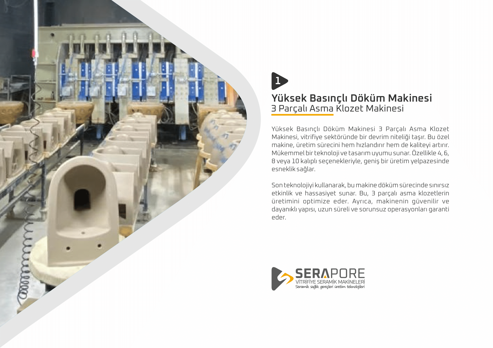
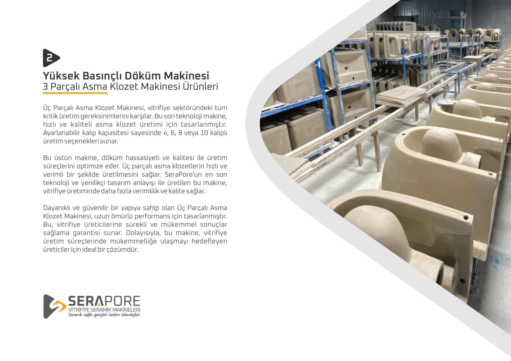
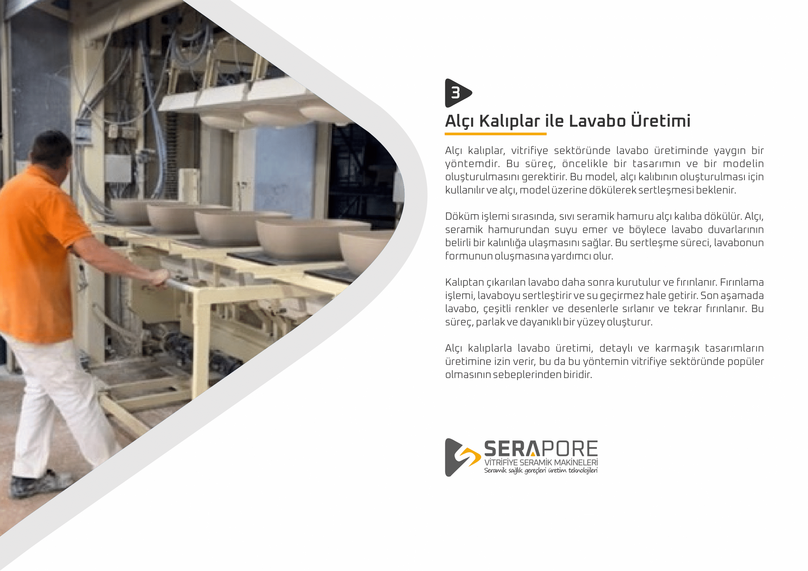
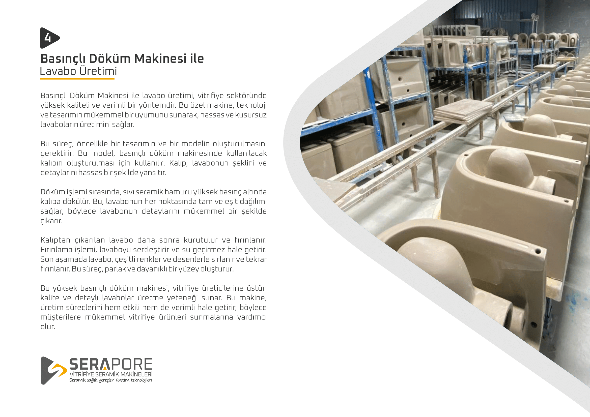
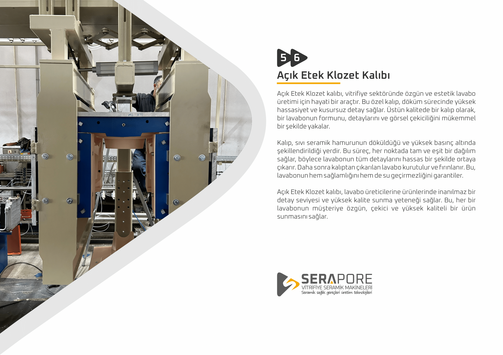
Açık Etek Klozet Kalıbı
Açık Etek Klozet kalıbı, vitrifiye sektöründe özgün ve estetik lavabo üretimi için hayati bir araçtır. Bu özel kalıp, döküm sürecinde yüksek hassasiyet ve kusursuz detay sağlar. Üstün kalitede bir kalıp olarak, bir lavabonun formunu, detaylarını ve görsel çekiciliğini mükemmel bir şekilde yakalar.
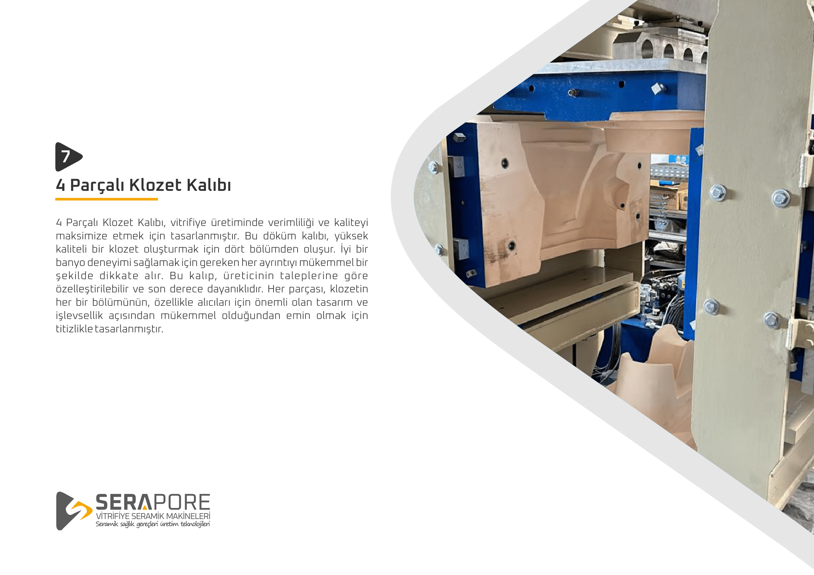
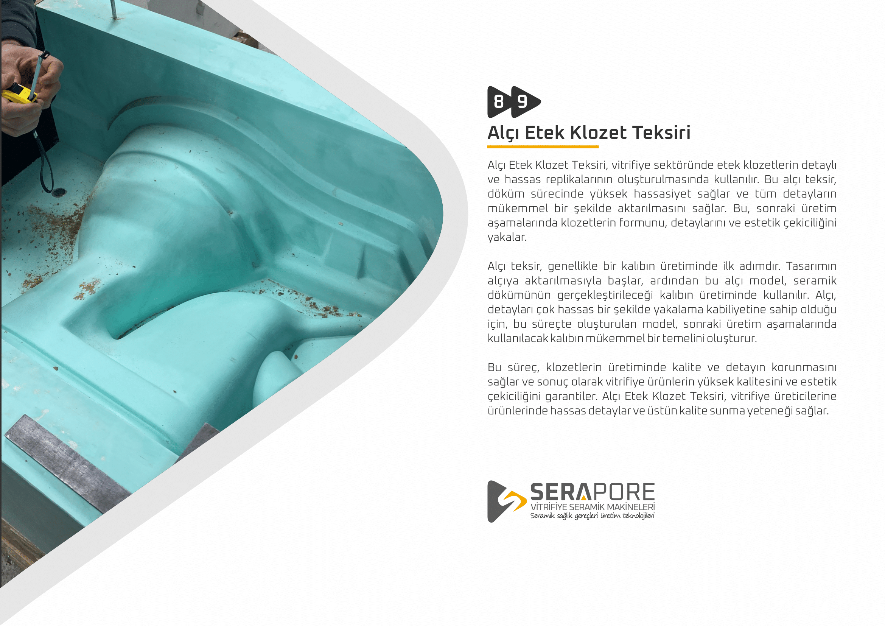
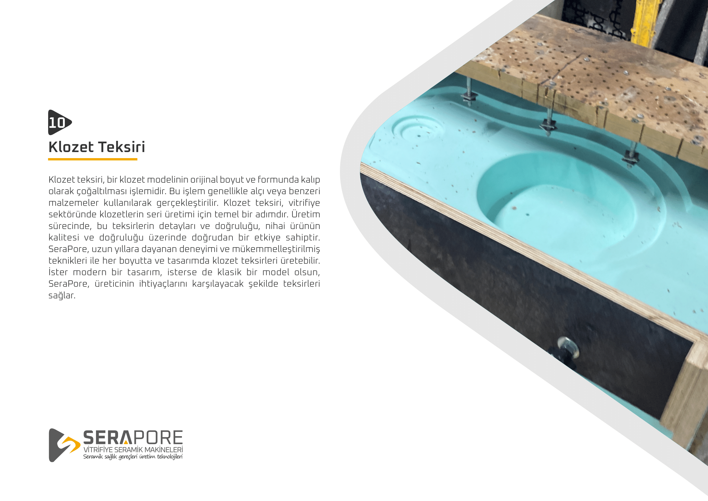
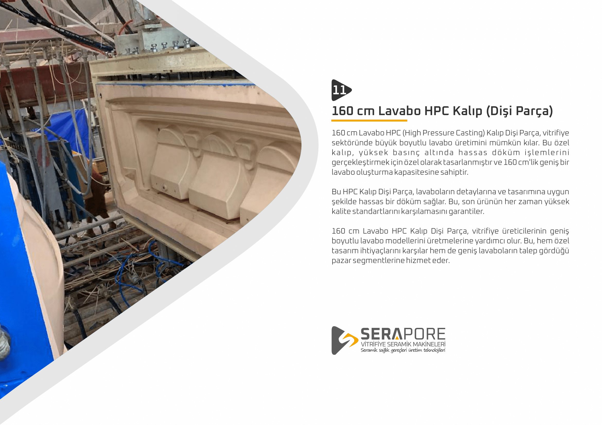
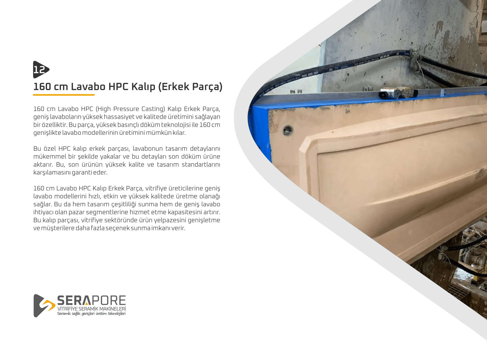
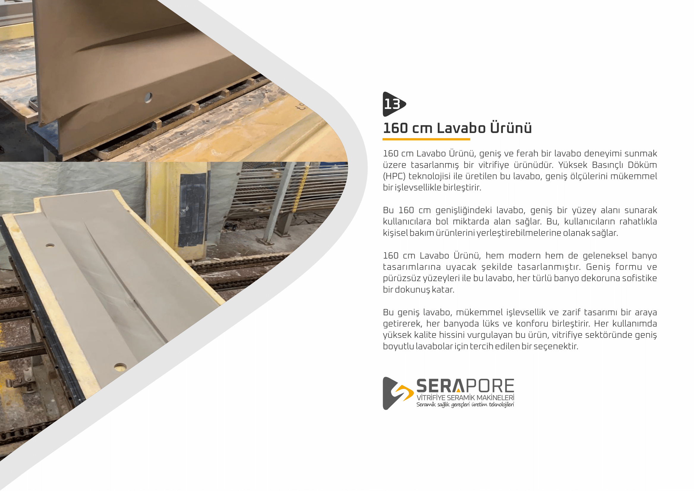